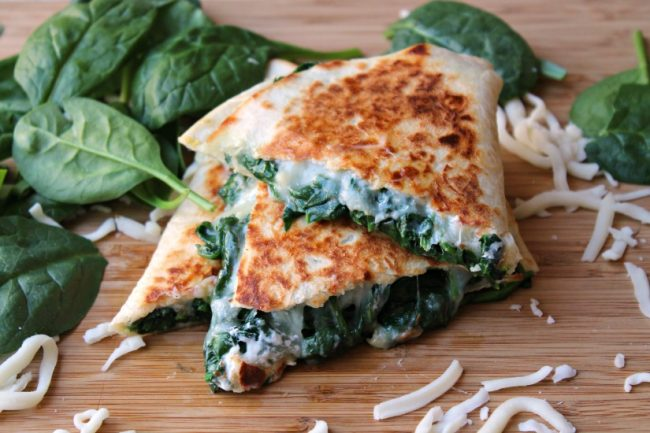

Spinach Quesadilla

Who would of thought that a meatless quesadilla would taste superior and of all the vegetables, spinach!
Now, I know nobody likes spinach except gorillas and your 80 year old grandparents who is desperately tyring to cling onto their health
But you will love spinach after puting it in a torilla with some mozarrella cheese and cream.
Ingredients
- 100g fresh spinach
- 50g Mozarella cheese
- 100ml fresh cream
- 12 inch flour torilla
- Siracha (optional)
- Sour cream (optional)
Steps
- Cook spinach in frying pan with cream and 50g of mozarella cheese until spinach is thick and cheesy
- Heat up flour torilla on grill pan or frying pan on low heat
- Put spinach on one half of the circular flour torilla
- Fold the torillain half like a half shaped moon without the arch
- Heat up both sides of the quesadilla
- cut moon shaped quesadilla into 4 pieces like a pizza
- put siracha and/or sour cream on top of quesadilla (optional)